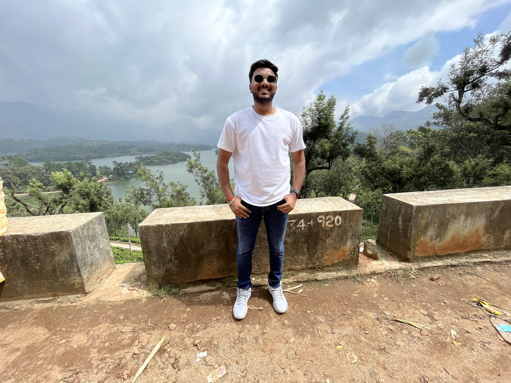

Nikhil Yadav

Summary
I am a dedicated and hardworking individual with experience in full stack web development and mainframe technologies
Education
- Bachelor of Technology, Information Technology, Ajay kumar Garg Enigneering College (2016-2020)
Work Experience
- Systems Engineer, Tata Consultancy Services (Nov 2020 - Sept 2023)
- Created and maintained banking aplications using Mainframe Technology.
- Worked as a QE testing associate to test banking applications.
Skills
- Java
- HTML
- CSS
- C/C++
- Mainframe Technologies
Awards/Achievements/certifications
Completed Web development bootcamp 2023 by Angela Yu on Udemy
Others